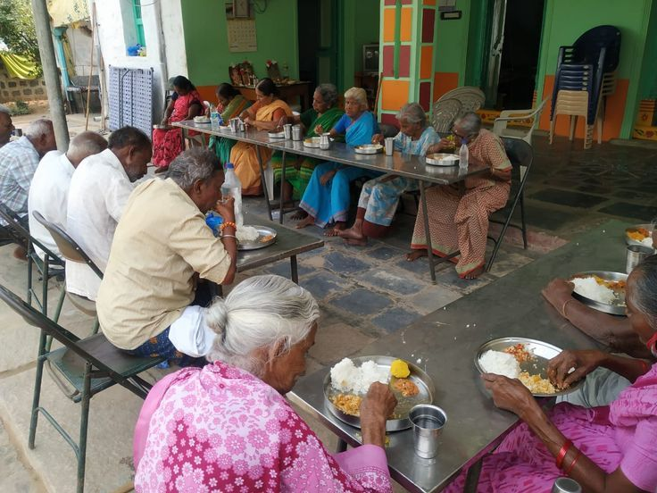
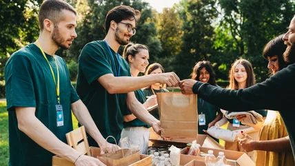
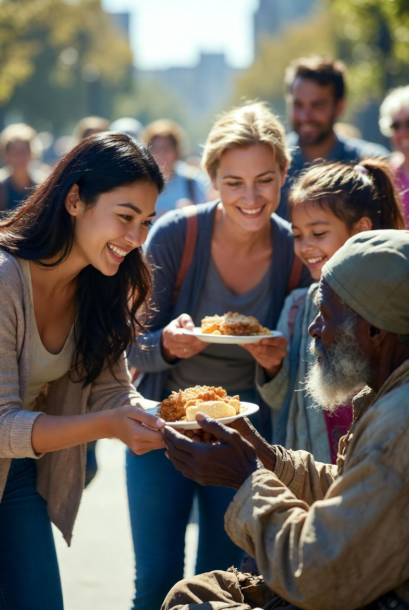
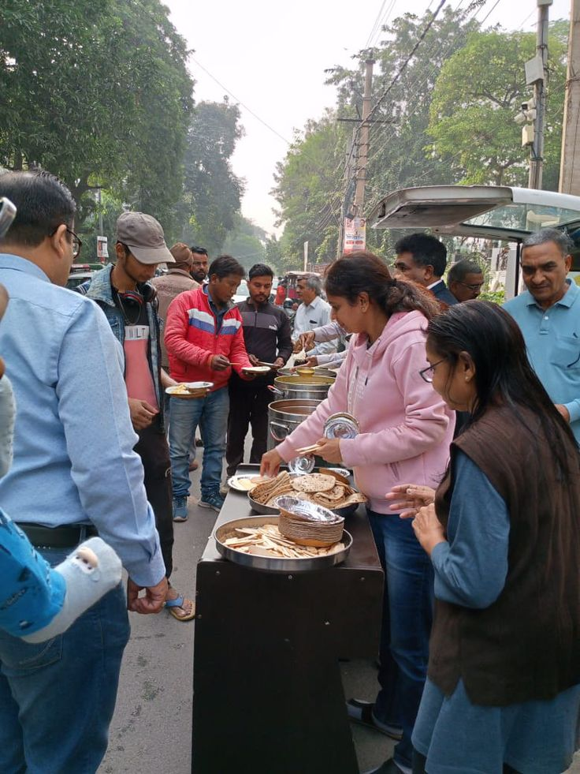
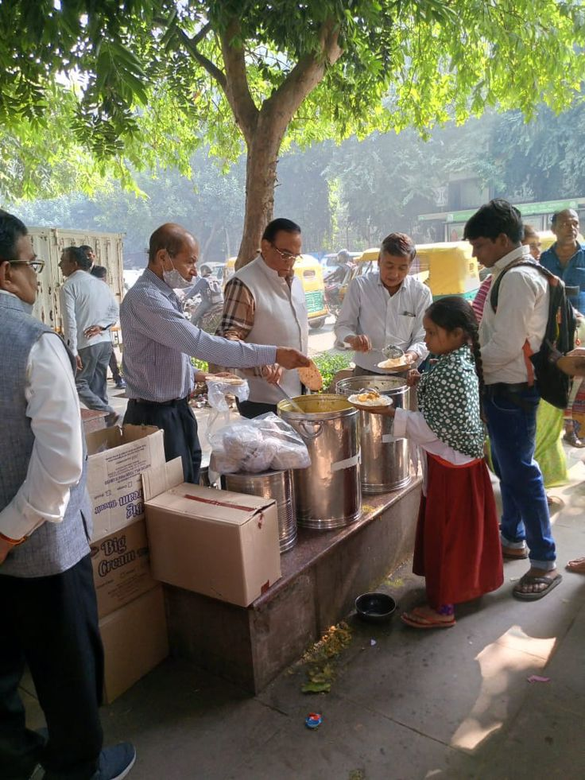
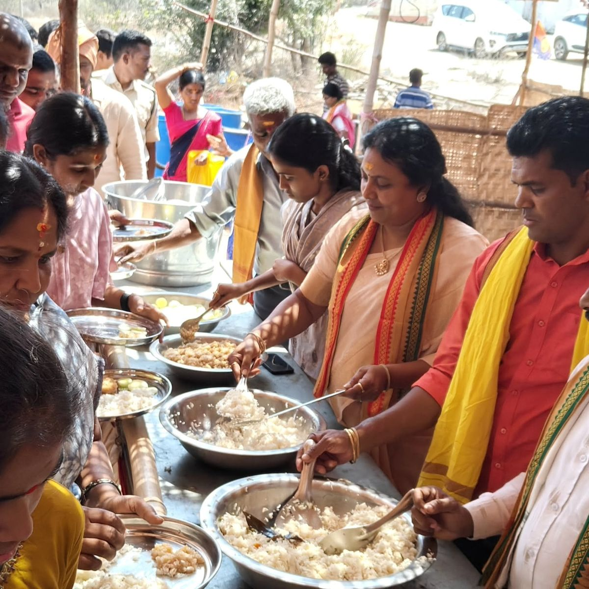
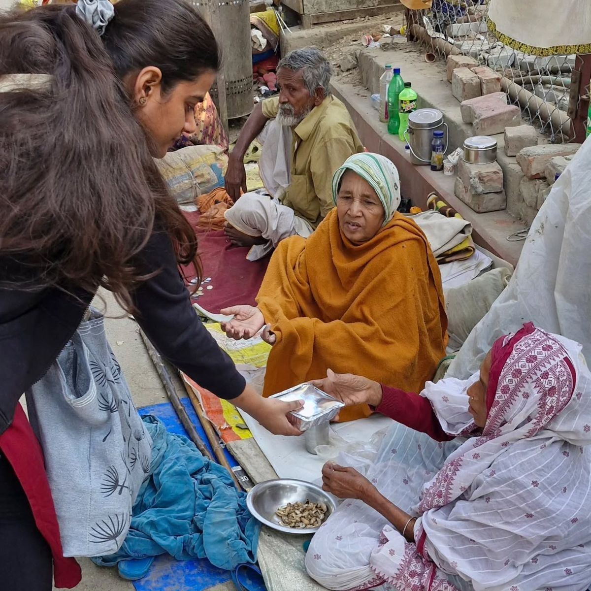
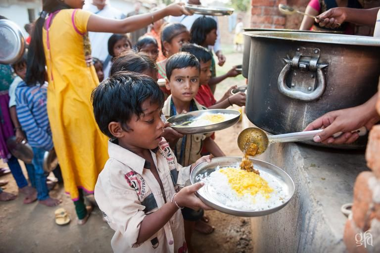

FeedPoint
FeedPoint
FeedPoint
FeedPoint
Restaurants waste tons of food daily.
Millions struggle to find daily meals.
Connecting donors and NGOs to fight hunger.
Snapshots of our journey in rescuing food and spreading hope.







